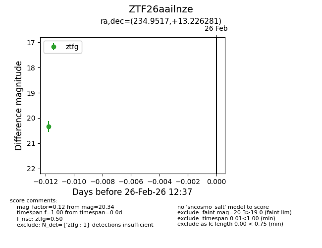
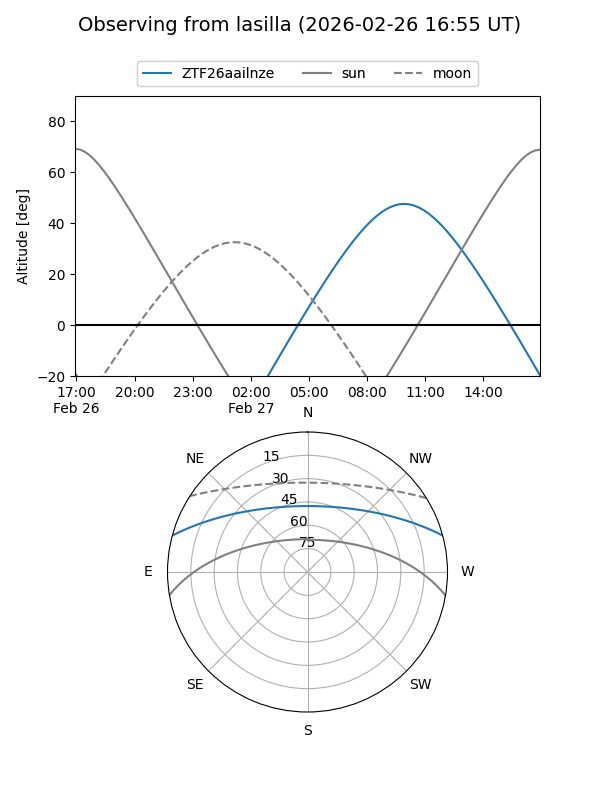
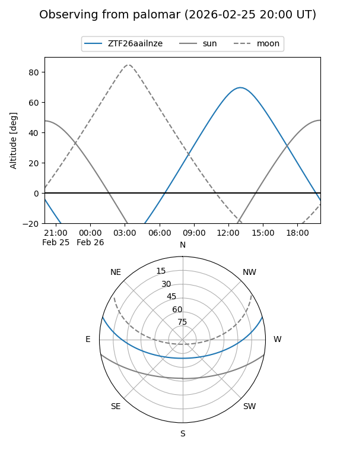

ZTF26aailnze
Target ZTF26aailnze at 2026-02-26 12:38
Aliases and brokers:
FINK: link
Lasair: link
ALeRCE: link
alt names
ZTF26aailnze (ztf,fink_ztf)
Coordinates:
equatorial (ra, dec) = 234.9517,+13.22628
equatorial (HMS+DMS) = 15:39:48.40,+13:13:34.61
galactic (l, b) = (22.0228,+48.35189)
Flags:
Photometry:
last ztfg=20.34
1 ztfg detections
Lightcurve

Visibility


Additional plots